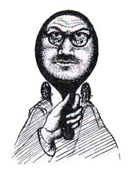

This book is an unconventional attempt to discover, for myself and in my own way, what I am and what I amount to in the universe.
What am I? That is the question. Let me try to answer it as honestly and simply as I can, forgetting the ready-made answers.
Common sense tells me that I am a man very similar to other men (adding that I am five-feet-ten, fortyish, grey-headed, around eleven stone, and so on), and that I know just what it is like here and now to be me, writing on this sheet of paper.
So far, surely, nothing can have gone wrong. But has my common sense really described what it is like to be me? Others cannot help me here: only I am in a position to say what I am. At once I make a startling discovery: common sense could not be more wrong to suppose that I resemble other men. I have no head! Here are my hands, arms, parts of my trunk and shoulders – and, mounted (so to say) on these shoulders, not a head, but — these words and this paper and this desk, the wall of the room, the window, the grey sky beyond… My head has gone, and in its place is a world. And all my life long I had imagined myself to be built according to the ordinary human and animal plan!
Where other creatures carry small rounded body-terminals, fairly constant in shape and furnished with such things as eyes and hair and mouth, there is for me a boundless and infinitely varied universe. It looks as if I alone have a body which fades out so that almost the only hints which remain of it above my shoulders are two transparent shadows thrown across everything. (I may call them nose-shadows if I please, but they are not in the least like noses.)
And certainly I do not find myself living inside an eight-inch ball and peering out through its portholes. I am not shut up in the gloomy interior of any object, and least of all in a small tightly-packed sphere, somehow managing to live my life there in its interstices. I am at large in the world. I can discover no watcher here, and over there something watched, no peep-hole out into the world, no window-pane, no frontier. I do not detect a universe: it lies wide open to me. These ink-marks are now forming on this sheet of paper. They are present. At this moment there is nothing else but this blue and white pattern, and not even a screen here (where I imagined I had a head) upon which the pattern is projected. My head, eyes, brain — all the instruments that I thought were here at the centre — are a fiction. It is incredible that I ever believed in them.
(No doubt something is going on here. But whatever they are and wherever they are, these aches and chafings and roughnesses, these tastes and smells and warmths, are not grey-haired and equipped with eyes and ears; they are not pink and eight inches across and ugly or handsome. In short they are not a head.)
A further and no less remarkable discovery follows — while I have no head where I thought I had one, I have innumerable heads where I thought I had none: heads mysteriously shrunken and variable, twisted back to front, and multiplied endlessly, in every reflecting surface.
That my head pervades the region round about is shown, first, by the fact that I have only to give any object there a polish to find my head in it; second, by the fact that if I take a box with a small hole in it (that is, a camera) and point it to the centre of the region, I find my head trapped in the box; and third, by the fact that my friends tell me that my head is present to them where they are, so that they can describe it in detail. It seems, then, that I am a decapitated body watched from the middle distance by its severed head, now made elastic, turned round to face its trunk, and hiding everywhere. Even the face with which my friend confronts me turns out to be a mask for mine: he cannot take off this mask, but he can tell me what it hides. And if he should be mistaken, at least his camera will hardly repeat the mistake: unlike him, it cannot be credited with the power of grasping what is going on elsewhere. It is honest about that part of me which it contains where it is. And if it could describe me as I really am, here at the centre, it would be a failure as a camera; for its photographs of me would show me beheaded, with itself — the camera —mounted on my shoulders.
(This extract is from the abridged version. The unabridged version is now also available on Amazon.)
(All books presented in our Book Extracts are available via Amazon or our website shop.)